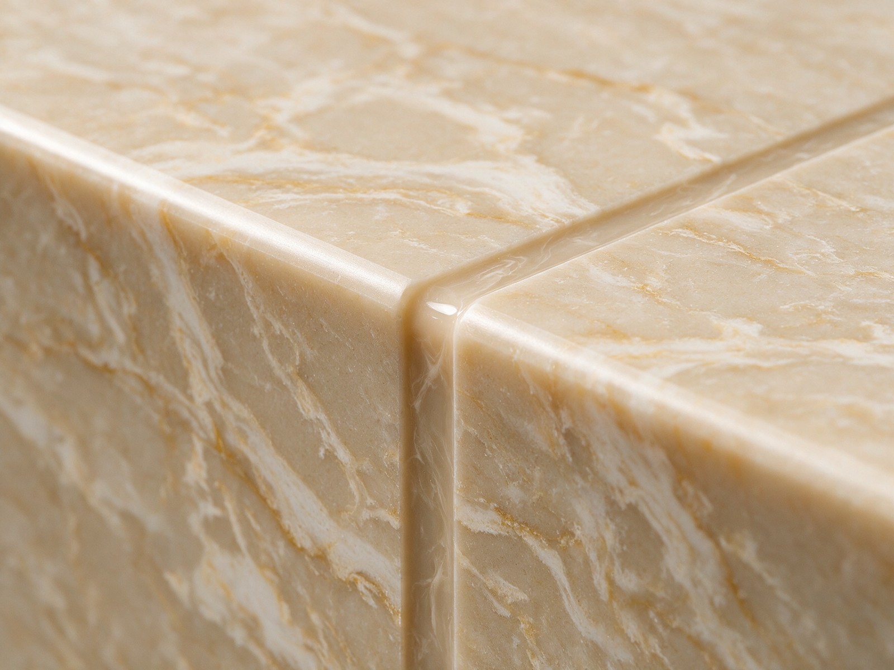

By the Editorial Team | Published: September 2026 | Last Updated: September 2026
Why Seams Exist and Why Their Placement Matters
Seams are unavoidable in most stone countertop installations. Slabs come in finite sizes (typically 3 meters by 1.6 meters as a common size, with larger slabs available at premium prices), and most residential counter runs exceed those dimensions. When the counter is larger than the largest available slab, at least one seam is required. The question is not whether to have seams but where to put them. Good seam placement makes the joints nearly invisible; bad seam placement produces visible joints in high-eye-line positions that become permanent aesthetic distractions. This walkthrough covers the decision framework fabricators use for seam placement and the trade-offs homeowners should understand before signing off on a layout.
The seam placement decision touches three different considerations: visual (where does the joint fall relative to sight lines), structural (can the specific position support a seam without failure), and material (what does the slab availability constrain). All three considerations happen simultaneously, and the final placement balances them rather than optimizing for any single one.
Visual Seam Placement Principles
The visual goal for seams is either to hide them or to acknowledge them intentionally. Both approaches work; the failure mode is placing seams where they read as accidental compromises rather than considered choices.
Hiding a seam relies on positioning it where the eye does not naturally focus. Behind the sink (in the shadow of the sink rim and less-lit than the main counter), at a plane change (where the counter turns a corner or drops to a different level), under a cabinet edge (where the joint is partially concealed by the upper cabinet shadow), or at the back of the counter (near the wall where the eye rarely lands) are all positions that hide seams effectively. Positioning a seam in one of these locations and pattern-matching the veining across the joint produces a joint that most viewers do not notice.
Acknowledging a seam intentionally works when the seam falls at a natural break in the counter geometry. A corner where two counter runs meet, a step where the counter changes level, or a break between the perimeter counter and an island are all positions where the eye expects a break. Placing a seam at one of these breaks reads as intentional even without pattern matching, because the joint is not fighting against a visual expectation of continuity.
The failure mode is placing a seam in the middle of a long counter run where no break is expected. Here the joint reads as an aesthetic problem because it interrupts continuity that the counter geometry implied. Homeowners who see the layout with this kind of seam placement should ask for a different arrangement.
How Seam Positions Get Chosen in Practice
The fabricator proposes seam positions based on the constraints. The template dimensions determine whether seams are needed at all. The available slab dimensions determine what seam positions are possible. The counter geometry determines which positions read as invisible or intentional. The fabricator's proposal typically minimizes seam count first, then optimizes seam position among the remaining constraints.

Homeowner input matters at this stage. Some homeowners have strong preferences about specific positions (never at the island end, always behind the sink). Some are more flexible and rely on the fabricator's judgment. Communicating preferences early lets the fabricator plan around them; discovering preferences at layout viewing after the plan is already made typically produces compromise rather than optimization.
Common Seam Positions and How They Read
| Position | Visual read | Typical use |
|---|---|---|
| Behind sink cutout | Nearly invisible | Long perimeter runs with a sink midway |
| At inside corner (L-shape) | Intentional if beveled or mitered | L-shaped counter with two long runs |
| At plane change (bar overhang, waterfall) | Intentional break | Multi-level counter geometries |
| Middle of straight run | Visible, harder to accept | Only when material constraints require it |
| At island edge (perimeter to island break) | Natural break | Kitchen with separate island |
Structural Considerations at Seam Positions
Beyond the visual, seam positions have structural implications. The joint between two pieces is inherently weaker than continuous stone, and the position has to support the joint reliably.
A seam over unsupported span is problematic because the joint is the weakest point in the counter and the unsupported span is the most-loaded position. A seam over a cabinet stile (the vertical structural member between cabinet doors) has direct support underneath and can handle heavier loading. A seam at a corner or plane change is supported by the geometry itself and works well structurally.
Sink cutouts create particular structural concerns. A seam positioned within a sink cutout area removes structural material at a position already weakened by the cutout. Reputable fabricators avoid this configuration or compensate with additional reinforcement (support brackets under the counter, reinforcing bar bonded into the cutout area). Homeowners should ask about seam positioning relative to sink cutouts to confirm the design handles the loading.
Cantilever and Overhang Considerations
Bar overhangs and cantilever sections have specific structural rules. Stone can cantilever unsupported for a limited distance (typically 25 to 30 centimeters for standard-thickness stone) before requiring structural support underneath. Seams within a cantilever section are especially problematic because the joint concentrates stress at the cantilever's weakest point.
The standard practice is to design cantilevers as single continuous pieces without interior seams. Where this is not possible (very long overhangs, unusual geometries), the fabricator adds steel plates or brackets bonded to the underside of the stone to carry the load across the seam.
Visible Versus Hidden Seam Philosophy
Different shops have different philosophies about visible seams. Some shops treat every seam as something to hide, positioning and finishing seams so they are undetectable in normal viewing. Other shops treat seams as honest structural elements, positioning them where they make sense structurally and finishing them cleanly but not attempting to hide them.

Both philosophies produce good work in the right hands. The homeowner benefits from asking the fabricator about their seam philosophy up front. A hide-seams philosophy suits homeowners who want a monolithic appearance; an honest-seams philosophy suits homeowners who accept that stone has natural structural limitations and prefer honest expression over illusion.
Pattern Matching Across Seams
Pattern matching is the practice of positioning two adjacent pieces so their veining continues across the joint. Well-executed pattern matching produces a seam that reads as continuous even at close inspection. Pattern matching requires that the two pieces come from the same slab (or from carefully-matched adjacent slabs), that the veining is compatible with the joint direction, and that the cutting is precise.
Not every stone supports pattern matching well. Random or organic veining (irregular patterns) is easier to pattern-match because minor mismatches read as natural variation. Directional veining (linear patterns) is harder because any mismatch in vein position or angle is immediately visible. Book-matched pairs are the extreme case, requiring precise mirror-image cutting for the pattern to work.
The homeowner's role in pattern matching is to communicate whether it is a priority. Pattern-matching adds cost (more careful layout planning, precise cutting, sometimes rejected pieces that did not match well enough) but produces a more resolved finished result. Homeowners who care about seam invisibility should ask about pattern matching explicitly; those who accept visible seams can skip it and save cost.
Seam Types and Finishing Techniques
Different seam types exist for different applications. The basic butt joint (two pieces meeting flush) is the standard for most residential seams. Mitered joints (angled cuts meeting at a corner) are used for waterfall edges and decorative applications. Bonded seams with color-matched epoxy fill are the standard finish for hidden seams.
| Seam type | Description | Best fit |
|---|---|---|
| Butt joint | Two pieces flush, filled with epoxy | Standard residential seams |
| Mitered joint | Angled cuts meeting at corner | Waterfall edges, decorative corners |
| Bonded seam (epoxy filled) | Color-matched epoxy fills the joint | Any hidden seam |
| Book-matched joint | Mirror-image pieces meeting | Statement pieces, waterfall islands |
Frequently Asked Questions
How can a homeowner tell if a proposed seam position is good?
By asking three questions at layout viewing: is this the fewest seams possible for this counter, is each seam positioned where the eye does not naturally focus, and does each seam have structural support underneath. Positive answers to all three indicate good seam planning. Uncertain answers suggest the layout might benefit from revision.
What does the epoxy fill look like in a bonded seam?
Color-matched epoxy in a hidden seam should read as nearly invisible. The epoxy is dyed to match the stone color and applied so the joint fills flush with the surrounding surface. At close inspection, the epoxy is visible as a hairline of slightly different color; at normal viewing distance, the seam is not detectable. Poor color matching or thick epoxy applications are the failure modes that make seams visible.
Can seams be repaired if they crack over time?
Yes, in most cases. If a bonded seam cracks or the epoxy separates, a stone restoration specialist can regrind the seam and rebond it with fresh epoxy. This work is usually inexpensive and produces results very close to the original seam quality. Structural seam failures (where the underlying support has failed) require more extensive repair.
How much does adding a seam cost?
Seams themselves do not usually add direct cost because the fabrication process handles them as part of the standard workflow. Where seams add cost is in material yield: additional seams sometimes require more slabs to achieve the layout, and the additional slab cost is significant. Pattern-matched seams add cost through the precise planning and cutting they require.
Do seams affect the counter's stain resistance?
Not typically. Bonded seams with quality epoxy fill are as stain-resistant as the surrounding stone. Poor-quality epoxy or aged epoxy (10 to 15 years old) can become porous and stain, at which point the seam benefits from regrinding and rebonding. This maintenance is part of long-term counter care.
Can a homeowner request no visible seams at all?
Sometimes, at cost. Very small kitchens might fit within a single slab and require no seams. Larger kitchens can sometimes be laid out to hide all seams behind sinks, at plane changes, and at corners. Very large kitchens (long straight runs exceeding slab length) cannot avoid at least one straight-run seam without extraordinary material investment. The fabricator can assess whether a specific kitchen can be made seam-free and at what cost.
How long does a seam bonding job take?
The bonding itself takes 15 to 30 minutes per seam once the pieces are positioned. Epoxy cure time (before the seam can be used normally) is typically 24 hours. On-site installations that include seam bonding therefore usually complete the bonding at the end of the installation day and let the seams cure overnight before the counter is used.
Does the seam location need to be marked on the counter for reference?
No. A well-executed bonded seam is not visible from above, and the seam location does not need to be marked. Homeowners typically forget seam positions within weeks of installation, and the location becomes relevant only if maintenance work is later needed on that specific seam.
